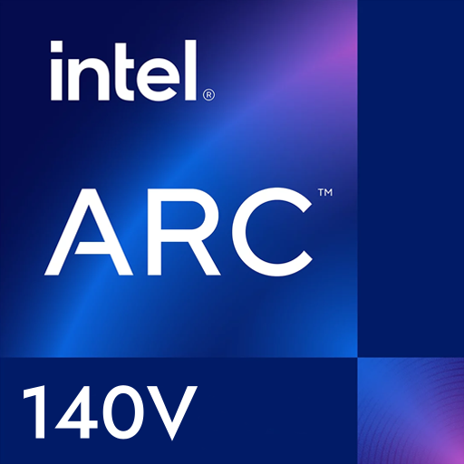
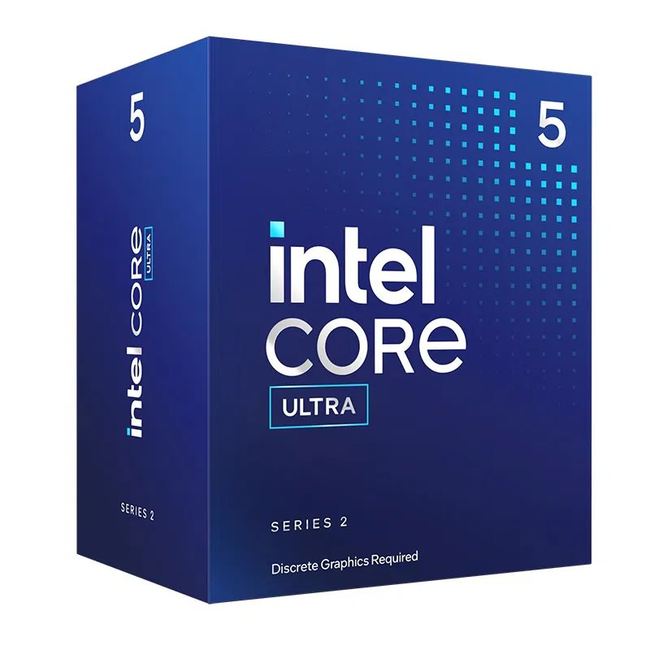

Procesor - Intel Core Ultra 7 258V
P-Core-Frekvence: 2.2 GHz
P-Core-Max Frekvence: 4.8 GHz
E-Core-Frekvence: 2.2 GHz
E-Core-Frekvence: 3.7 GHz
Počet Jader: 8
Počet Vláken: 8
L0-D 48 KB (1 jádro)
L1 Casche: 192 KB (1 jádro)
L2 Casche: 2.5 MB (1 jádro)
L3 Casche: 13 MB
E-Core L1: 96 KB (1 jádro)
E-Core L2: 4 MB (1 jádro)
TDP: 17W
Max TDP: 37W
Socket: Intel BGA 2833
Výrobní Technologie: 3 nm
Grafická Karta - Intel Arc Graphics 140V
Počet Stream Procesorů: 1024x
Výrobní Technologie: 3nm
Architektura Čipu: Intel Xe-LPG
Grafický Procesor: Lunar Lake
Typ Paměti: LPDDR5
Frekvence Jádra: 300 MHz
TDP: 37 W

